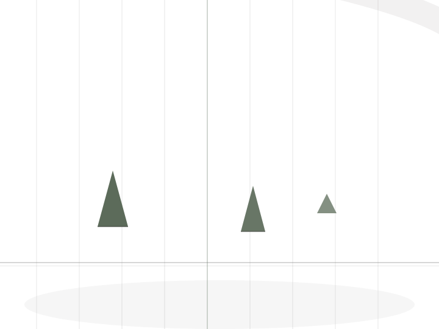
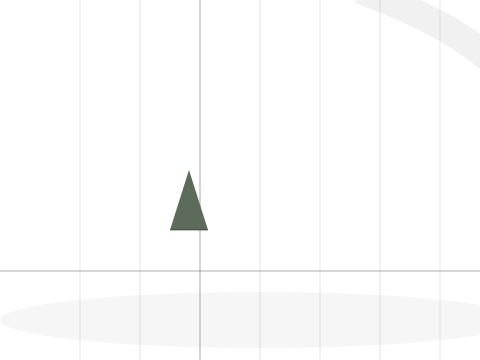

聿禾國乐
聿禾國乐
关于
关于
聿禾國乐
一间以古筝为核心的当代国乐文化空间，安静地落在深圳南山。

我们是谁
古筝不只是
一件乐器
聿禾國乐古筝艺术中心是一家以古筝为核心、以东方音乐文化为脉络的国乐文化空间。我们以古筝为唯一主角，为成人与少儿提供一个接触、了解与研习古筝的场所。

运营主体
品牌与公司的关系
聿禾國乐古筝艺术中心，由聿禾文化（深圳）有限公司实际运营。
聿禾文化
（深圳）有限公司
（深圳）有限公司
旗下 · 实际运营
聿禾國乐
古筝艺术中心
古筝艺术中心
深圳
NANSHAN
服务对象
成人与少儿
真实业务同时覆盖两个方向。
- 成人面向成年古筝学习者
- 少儿面向少儿古筝相关业务
- 业务方向古筝
关于聿禾國乐
常见问题
Q1聿禾國乐在哪里？
位于广东深圳南山，可在地图平台搜索「聿禾國乐」查看所在位置。
Q2聿禾國乐和聿禾文化（深圳）有限公司是什么关系？
聿禾國乐古筝艺术中心属于聿禾文化（深圳）有限公司旗下，并由该公司实际运营。
Q3聿禾國乐面向哪些学习者？
当前真实业务同时包含成人和少儿古筝方向。